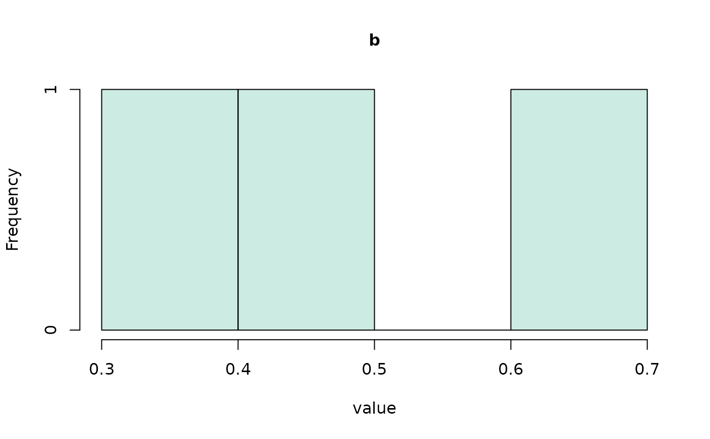
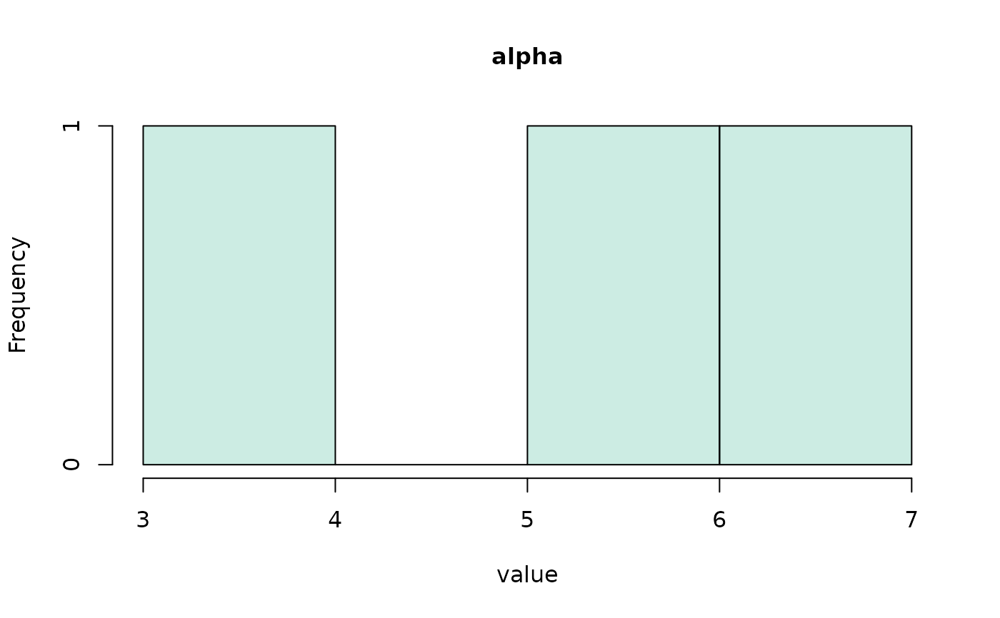
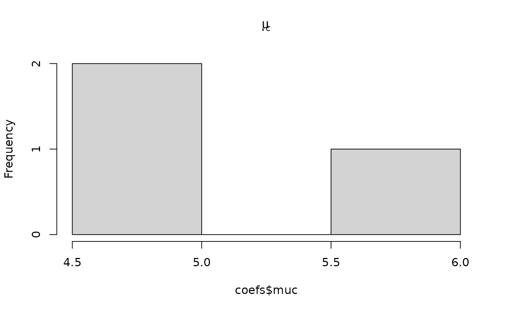

This function creates a histogram for each parameter in a coefs_dm object,
resulting from a call to coef.fits_ids_dm.
Usage
# S3 method for class 'coefs_dm'
hist(
x,
...,
conds = NULL,
col = NULL,
xlim = NULL,
ylim = NULL,
xlab = "value",
ylab = NULL,
bundle_plots = TRUE
)Arguments
- x
an object of class
coefs_dm(see coef.fits_ids_dm)- ...
additional graphical arguments passed to
graphics::hist(). Not supported are theplotandprobabilityarguments (the latter can be controlled via the supportedfreqargument). For further plotting arguments, see alsoset_default_arguments().- conds
a character vector specifying the conditions to plot. Defaults to all available conditions.
- col
character vector, specifying colors for each condition, if conditions are present.
- xlim
a numeric vector of length 2, specifying the x-axis limits.
- ylim
a numeric vector of length 2, specifying the y-axis limits.
- xlab, ylab
character strings for the x- and y-axis labels.
- bundle_plots
logical, indicating whether to display separate panels in a single plot layout (
FALSE), or to plot them separately (TRUE).
Details
The hist.coefs_dm function is designed for visualizing parameter
distributions.
If multiple conditions are present, it overlays histograms for each condition with adjustable transparency.
When bundle_plots is set to TRUE, histograms for each parameter are
displayed in a grid layout within a single graphics device.
This function has some customization options, but they are limited. If you
want to have a highly customized histogram, it is best to create it on your
own using R's graphics::hist() function (see the examples below).
Examples
# get an auxiliary fit procedure result (see the function load_fits_ids)
all_fits <- get_example_fits("fits_ids")
coefs <- coef(all_fits)
print(coefs)
#> Object Type: coefs_dm
#>
#> ID muc b non_dec sd_non_dec tau A alpha
#> 1 1 4.551 0.446 0.341 0.032 0.035 0.103 7.386
#> 2 2 4.174 0.387 0.292 0.040 0.067 0.079 7.736
#> 3 3 5.652 0.585 0.319 0.014 0.101 0.180 3.840
#>
#> (access the data.frame's columns/rows as usual)
hist(coefs, bundle_plots = FALSE) # calls hist.coefs_dm method of dRiftDM


# how to fall back to R's hist() function for heavy customization
coefs <- unpack_obj(coefs) # provides the plain data.frame
hist(coefs$muc, main = expression(mu[c])) # calls graphics::hist()
